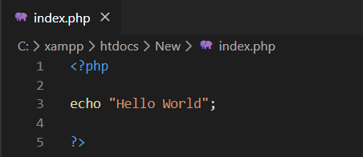

We nee to run the .php file on server (It carries dynamic content so cant be hosted on github)
So here I'm using Xampp to create a apache local server

How to display error in code on web brower
Steps:- 1) Create a file php.ini
- 2) Write the following line
-
- error_reporting=E_ALL
- display_errors=On
- 3) Now if we create mistake it will show on browser.
- Tip: When in production turnOFF the flags in .ini file